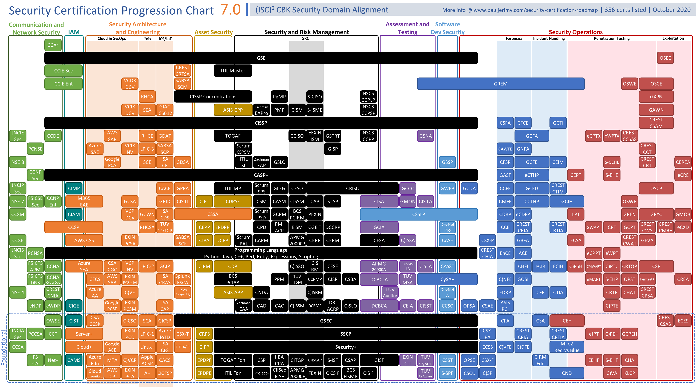
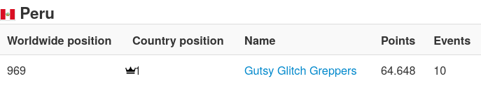
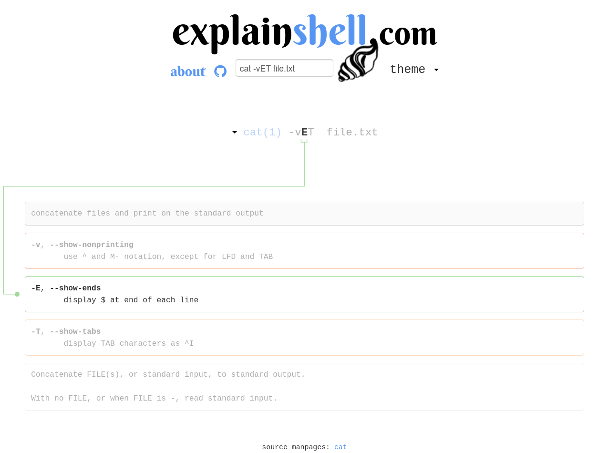

Hacking Bootcamp S0: Hello, computer
Hacking
By convention sweet is sweet, bitter is bitter, hot is hot, cold is cold, color is color; but in truth there are only atoms and the void. — Democritus
A safe server?
import time from flask import Flask, request app = Flask(__name__) SECRET_TOKEN = "hacky" @app.route("/") def protected(): token = request.headers.get("X-TOKEN") if not token: return "Missing token", 401 if strcmp(token, SECRET_TOKEN): return "Hello admin user! Here is your secret content" else: return "WHO ARE YOU? GET OUT!", 403
def strcmp(s1, s2): if len(s1) != len(s2): return False for c1, c2 in zip(s1, s2): if c1 != c2: return False time.sleep(0.01) return True if __name__ == "__main__": app.run()
What’s wrong?
- Time is a side-channel
- Comparing the user-provided input with the secret depends on the user-input
- More time is taken as more characters in the prefix of the user-input match the secret
- We can measure such times and infer the correct secret
PoC (proof of concept)
$ python3 hack.py Trying to find the character at position 1 with prefix '' ..........................Found character at position 1: 'h' Median: 0.014210520494088996 Max: 0.014913284991052933 Min: 0.011371066997526214 Stddev: 0.0009157040256580121 Following characters were: Character: 'o' Median: 0.0038346719957189634 Max: 0.004211759005556814 Min: 0.0018405050068395212 Stddev: 0.0005487564034908333 (73% slower) Character: 'i' Median: 0.0037917059962637722 Max: 0.004303172987420112 Min: 0.0014267200022004545 Stddev: 0.0006530132317953015 (73% slower) Character: 'j' Median: 0.0037598100025206804 Max: 0.004142267003771849 Min: 0.0015765940042911097 Stddev: 0.0007008104778241527 (73% slower) [snip…] Trying to find the character at position 5 with prefix 'hack' ......................... The token is: 'hacky' !!!!!!!!!!
Is cybersecurity hard?

Cybersecurity is hard, let’s go CTFing
- Self-contained hacking exercises
- Allows you to practice and research one exercise at a time
- We will mainly use PicoCTF
- Register please:
- https://play.picoctf.org
- https://play.picoctf.org/classrooms
- Join the classroom with code:
C7Re8J81k
- Join the classroom with code:
Categories
- Forensics: Examining digital artifacts to recover hidden or deleted data
- Steganography (stego): Finding hidden data inside files or media
- Web Exploitation (web): Finding and exploiting vulnerabilities in web applications
- Binary Exploitation (pwn): Exploiting bugs in compiled programs to control execution
- Cryptography (crypto): Breaking or abusing cryptographic systems
- Reverse Engineering (rev): Analyzing binaries or apps to understand and extract secrets
- OSINT: Gathering useful information from public sources
- Miscellaneous (misc): General puzzles and challenges that do not fit other categories

GGG
CTF Team at UTEC
Best (and only) peruvian team at CTF Time

Me
Alvaro
CS graduate
Cybersecurity speciality
Plan
- Linux, bits and bytes
- Forensics: File formats and steganography
- Forensics: Network protocols
- Web: Web apps fundamentals
- Web: Server side: CMDi and SQLi
- Web: Client side: XSS, CSRF
- Linux systems and some hacking (HackTheBox)
- Hack UTEC’s network?
To be decided:
- Cryptography
- GDB debugging
- x86 ASM for reversing
- Binary exploitation
Today’s menu
- Presentation
- Living in the terminal
- Commands and arguments
- Files, paths, and working directories
- Command redirection
- Essential Linux commands
- How computers represent data
- Binary and hexadecimal
- Signed numbers (two’s complement)
- Endianness and memory layout
- How text and data are encoded
- ASCII, UTF-8
- Bytes and interpretation
- Base64
- Many exercises!
Operating System (OS)
- Software layer between computer hardware and applications.
- Manages the running programs, memory space, filesystems, attached devices, etc.
Programs and Processes
A program is a file with instructions for our CPU and OS.
When executed, the OS creates a process (with some state) with the instructions and the CPU runs them.
- Program: Inert file with instructions
- Process: Running program with some state associated
Commands
What’s a command
A command is some executable available in the system.
Running a command means that the OS starts a process with the executable code and passes the corresponding arguments and environment.
NOTE: actually, Bash has some commands that are in fact not system executables (e.g., aliases, builtins)
Invoking commands
Open a terminal and type the command, arguments are specified after the command name. Commands can be specified specifying a path or be unqualified. If specified by path, the location must hold the file to be executed.
NOTE: Any program can invoke other program, Bash is just another program
Example
print_args.py
#!/usr/bin/env python3
import sys
for i, a in enumerate(sys.argv):
print(f'arg {i}: {a}')
This python script prints all arguments given.
$ ./print_args.py arg 0: ./print_args.py $ $PWD/print_args.py arg 0: /tmp/tmp.x343BPOn09/print_args.py
The first argument passed to a command (implicitly) is the executable name used to invoke it.
Passing words after the command are arguments to the command.
$ ./print_args.py A B C arg 0: ./print_args.py arg 1: A arg 2: B arg 3: C
$IFS
NOTE: The characters in “$IFS” are used to separate the arguments.
$ echo "${IFS@Q}"
$' \t\n'
Escaping “$IFS”
As $IFS characters separate words, arguments using such characters must be quoted ("" or '') or escaped (\).
$ ./print_args.py "A B" C D arg 0: ./print_args.py arg 1: A B arg 2: C arg 3: D $ ./print_args.py A\ B C D arg 0: ./print_args.py arg 1: A B arg 2: C arg 3: D
Arguments are just strings
It’s up to the command to interpret as whatever they need. E.g., they must resolve the paths to files, convert the strings to integers, etc.
Example
sum_two.py
#!/usr/bin/env python import sys print(sys.argv[1] + sys.argv[2])
$ ./sum_two.py 1 2 12
Python summed the strings and the result is the concatenation.
If we wanted the integer sum we need to convert them to the datatype.
Similar operations should be done in other languages
sum_two_fixed.py
#!/usr/bin/env python import sys print(int(sys.argv[1]) + int(sys.argv[2]))
$ ./sum_two_fixed.py 1 2 3
Paths
Paths to files can be specified in relative or absolute form.
Absolute paths
Specify the same location anywhere in the system. Start with /
Examples:
$ cat /etc/passwd $ cat /proc/1/environ
Relative paths
Start with ./, ../, or with the name of a file/directory.
Examples:
$ cat ./file.txt $ cat file.txt # Same as last one $ cat ../file_in_parent.txt
They are resolved relative to the shell present working directory (PWD).
$PWD
Each Linux process (e.g., Bash) has a PWD associated to it by the OS.
This can be changed by the process itself (OS: chdir syscall).
Bash uses cd builtin (e.g., cd some/path). C programs would do the chdir
syscall. Python has os.chdir().
Note: Target path can be relative or absolute.
Python example
In [1]: import os
In [2]: os.getcwd()
Out[2]: '/home/hacker'
In [3]: os.chdir("Desktop")
In [4]: os.getcwd()
Out[4]: '/home/hacker/Desktop'
Some commands
echo
Display text
echo STRING
$ echo 'Hello, world' Hello, world
pwd
Print the name of the working directory
$ pwd /home/hacker
cd
Change the working directory (also called CWD, current working directory)
cd DIR
$ pwd /home/hacker $ cd Desktop/ $ pwd /home/hacker/Desktop $ cd /etc/systemd/ $ pwd /etc/systemd
Note: This is not actually an external executable but a bash builtin that changes the process’ CWD
ls
List directory contents
ls [DIR]
$ ls A B C $ ls A file_A_001.txt file_A_002.txt file_A_003.txt file_A_004.txt file_A_005.txt
cat
Concatenate file contents
cat FILE1 FILE2
$ cat hello.txt Hello, world! $ cat hello.txt hello.txt Hello, world! Hello, world! $ cat hello_tab.txt Hello there, friend $ cat -A hello_tab.txt Hello^Ithere,^Ifriend$
ssh
Log onto remote systems and get a shell or run commands
$ ssh hacker@dojo.pwn.college -p 22 Connected! hacker@reverse-engineering~the-patch-directive:~$ id uid=1000(hacker) gid=1000(hacker) groups=1000(hacker)
$ ssh hacker@dojo.pwn.college -p 22 id uid=1000(hacker) gid=1000(hacker) groups=1000(hacker)
NOTE: sftp can be used to transfer files
nc
Do TCP or UDP connections or listens
$ nc 127.0.0.1 31337 Hello hacker
Exercises
- Super SSH https://play.picoctf.org/practice/challenge/424
- what’s a net cat? https://play.picoctf.org/practice/challenge/34
- Wave a flag https://play.picoctf.org/practice/challenge/170
- Obedient Cat https://play.picoctf.org/practice/challenge/147
- Binary search https://play.picoctf.org/practice/challenge/442
- Magikarp Ground Mission https://play.picoctf.org/practice/challenge/189
Redirection
Commands print their output to the terminal (STDOUT, STDERR), the output can be redirected to a file or to the input of other commands (STDIN).
To files
COMMAND >FILE
$ echo 'Hello, world!' >hello.txt $ cat hello.txt Hello, world!
To other commands
COMMAND1 | COMMAND2
$ echo 'Hello, world!' | rev !dlrow ,olleH
NOTE: rev reverses the text line per line.
Getting help
Programs are usually documented in many places.
You can STFW (search the friendly web), RTFM (read the fine manual) or RTFS (read the fabulous source).
Offline alternatives
--help
$ cat --help
Usually a summarized version
man
$ man cat
CAT(1) User Commands CAT(1)
NAME
cat - concatenate files and print on the standard output
SYNOPSIS
cat [OPTION]... [FILE]...
DESCRIPTION
Concatenate FILE(s) to standard output.
With no FILE, or when FILE is -, read standard input.
-A, --show-all
equivalent to -vET
More complete
info
$ info cat
File: coreutils.info, Node: cat invocation, Next: tac invocation, Up: Output of entire files
3.1 ‘cat’: Concatenate and write files
======================================
‘cat’ copies each FILE (‘-’ means standard input), or standard input if
none are given, to standard output. Synopsis:
cat [OPTION] [FILE]...
The program accepts the following options. Also see *note Common
options::.
‘-A’
‘--show-all’
Equivalent to ‘-vET’.
Sometimes even more complete, especially for GNU programs
tldr
Shows some common variations of commands
$ tldr cat
cat
Print and concatenate files.
More information: https://www.gnu.org/software/coreutils/manual/html_node/cat-invocation.html.
- Print the contents of a file to `stdout`:
cat path/to/file
- Concatenate several files into an output file:
cat path/to/file1 path/to/file2 ... > path/to/output_file
- Append several files to an output file:
cat path/to/file1 path/to/file2 ... >> path/to/output_file
...
Available online at https://tldr.inbrowser.app/
Online resources

More commands
file
Determine file type
file FILE
$ file hello.c hello.c: C source, ASCII text $ file hello.out hello.out: ELF 64-bit LSB executable, x86-64, version 1 (SYSV), dynamically linked, interpreter /nix/store/zdpby3l6azi78sl83cpad2qjpfj25aqx-glibc-2.40-66/lib/ld-linux-x86-64.so.2, for GNU/Linux 3.10.0, not stripped
find
Find files in a directory
find PATH -name NAME
$ find . -name secret.txt ./some/arbitrarily/nested/path/secret.txt
Note: Many, many useful options, check tldr
grep
Find patterns in files
grep PATTERN FILE
$ grep -i "flag" dump.txt
flag{secret_value}
$ cat dump.txt | grep -i "flag"
flag{secret_value}
NOTE: Check regular expressions and grep -P
NOTE: quite a lot of commands that take a FILE argument can also read from STDIN.
strings
Print the sequences of printable characters in files
strings FILE
$ strings hello.out /nix/store/zdpby3l6azi78sl83cpad2qjpfj25aqx-glibc-2.40-66/lib/ld-linux-x86-64.so.2 __printf_chk __libc_start_main libc.so.6 GLIBC_2.3.4 GLIBC_2.34 /nix/store/2651x1rpsl18jlwg5a38vrpv5n0yfv0g-shell/lib:/nix/store/zdpby3l6azi78sl83cpad2qjpfj25aqx-glibc-2.40-66/lib:/nix/store/bmi5znnqk4kg2grkrhk6py0irc8phf6l-gcc-14.2.1.20250322-lib/lib __gmon_start__ PTE1 Hello, world! …
base64
Encode or decode FILE to/from base64
base64 FILE
base64 -d FILE
$ echo 'Hello, world' | base64 SGVsbG8sIHdvcmxkCg== $ echo 'SGVsbG8sIHdvcmxkCg==' | base64 -d Hello, world
xxd
Make a hexdump or reverse it
$ echo 'Hello, world' | xxd 00000000: 4865 6c6c 6f2c 2077 6f72 6c64 0a Hello, world. $ echo 'Hello, world' | xxd | xxd -r Hello, world
nano
Edit text files in terminal
nano FILE
CTRL-x exits
sudo
Soon™
Exercises
- First Grep https://play.picoctf.org/practice/challenge/85
- First Find https://play.picoctf.org/practice/challenge/320
- Big Zip https://play.picoctf.org/practice/challenge/322
- Static ain’t always noise https://play.picoctf.org/practice/challenge/163
- strings it https://play.picoctf.org/practice/challenge/37
- plumbing https://play.picoctf.org/practice/challenge/48
Integer Numbers
Binary
Computers only work on bits (0 or 1), any value we may wish to operate on must be represented by a sequence of 0s and 1s.
How may we represent numbers?
We use binary representation:
This means that any number we may want to operate on will be represented by sums of power of two. The computer carries normal arithmetic operations on them.
Hex representation
Handling binary literals in code is a handful, we need one character for each digit and \(1 + \log_2 n\) digits total.
Representing a C int (32 bits) would look like:
10111000000001101100001100100001
We can use hex digits to make the representation more concise.
Each hex digit represents 4 bits (called a nibble), half a byte.
We count from 0 to 9 and then use A to F for the following digits (10 to 15).
| Binary | Hex | Decimal | Binary | Hex | Decimal |
|---|---|---|---|---|---|
| 0b0000 | 0x0 | 0 | 0b1000 | 0x8 | 8 |
| 0b0001 | 0x1 | 1 | 0b1001 | 0x9 | 9 |
| 0b0010 | 0x2 | 2 | 0b1010 | 0xA | 10 |
| 0b0011 | 0x3 | 3 | 0b1011 | 0xB | 11 |
| 0b0100 | 0x4 | 4 | 0b1100 | 0xC | 12 |
| 0b0101 | 0x5 | 5 | 0b1101 | 0xD | 13 |
| 0b0110 | 0x6 | 6 | 0b1110 | 0xE | 14 |
| 0b0111 | 0x7 | 7 | 0b1111 | 0xF | 15 |
Note: For notation purposes, we prefix binary literals by 0b and hex literals by 0x
Note: Two hex digits make a byte
Python example
All previous notations can be used to represent numbers in many programming languages.
i1 = 10 i2 = 0b10 i3 = 0x10 (i1, i2, i3) # (10, 2, 16)
If we are converting from string we can specify base:
int('0b1010', 2) # 10 int('0xA', 16) # 10
Note: The prefix may be skipped here
We can also convert to some representation
bin(10) # '0b1010' hex(10) # '0xa'
Two’s complement
We also want to represent negative numbers, for implementation reasons signed numbers (numbers that may be positive or integer) are represented in two’s complement format.
The representation of a given \(-i\) using \(N\) bits is the representation of unsigned \(2^N - i\).
Example
To represent \( -7 \) using \( 8 \) bits:
\[ 2^8 - 7 = 256 - 7 = 249 = \mathrm{0b11111001} \]
So -7 using 8 bits is 0b11111001.
Note: We need to define an integer size (in bits) to determine the binary representation.
Shortcut
An easier way to compute the two’s complement is to invert all bits in the binary representation and add 1 to the result.
So, to compute the two’s complement 8-bit representation of -7, we use the representation of 7 = \(0b00000111\).
Negate: not 0b00000111 = 0b11111000
Add 1: 0b11111000 + 1 = 0b11111001
Same result as before.
First bit is (almost) sign
The first bit in a signed two’s complement integer indicates the sign, all negative numbers have first bit 1 while all positive numbers (and zero) have 0.
Using 8 bits:
0 = 0b00000000 = 0x00
1 = 0b00000001 = 0x01
127 = 0b01111111 = 0x7F
-1 = 0b11111111 = 0xFF
-128 = 0b10000000 = 0x80
Endianness
x86-64 has memory addressable memory, we then have a choice of how store multi-byte values in memory.
If we want to store a C int (4 bytes) 0xAABBCCDD (\(2864434397_{10}\)) into 4 bytes of memory at ptr[0], ptr[1], ptr[2], ptr[3], we could do:
| ptr[0] | ptr[1] | ptr[2] | ptr[3] | |
|---|---|---|---|---|
| Little-endian | 0xDD | 0xCC | 0xBB | 0xAA |
| Big-endian | 0xAA | 0xBB | 0xCC | 0xDD |
That is, little-endian stores the last (least significant) byte first in memory, while big-endian stores the first (most significant) byte first.
Despite big-endian seeming more reasonable, x86-64 use little-endian
Demo
Using cling (C++ interpreter)
[cling]$ #include <stdint.h>
[cling]$ uint8_t arr[4];
[cling]$ arr
(uint8_t [4]) { '0x00', '0x00', '0x00', '0x00' }
[cling]$ int* int_p = (int*) arr;
[cling]$ *int_p = 0xAABBCCDD
(int) -1430532899
[cling]$ arr
(uint8_t [4]) { '0xdd', '0xcc', '0xbb', '0xaa' }
[cling]$ *int_p = 255
(int) 255
[cling]$ arr
(uint8_t [4]) { '0xff', '0x00', '0x00', '0x00' }
Exercises
Data encodings
We may also wish to represent characters. As we only have bits to work with, we must associate (that is, encode) bit patterns to some characters.
ASCII
ASCII (American Standard Code for Information Interchange) is the oldest standard character encoding (1960s).
It uses 7 bits to map letters (a-zA-Z), digits (0-9), symbols (e.g., @#$%^&), space (' ') and control characters (e.g., LF: new line, HT: horizontal tab).
Notably:
0x0A: ’\n’ - line feed, newline
0x20: ’ ’ - space
0x30-0x39: 0, 1, 2, …, 9
0x41-0x5A: A, B, C, …, Z
0x61-0x7A: a, b, c, …, z
Full table: man ascii
Table
Not all byte values are ASCII decodable
ASCII uses only 7 bits, so bytes in the range 0x80-0xFF can not be interpreted as ASCII.
In [1]: b'\x80'.decode('ascii')
---------------------------------------------------------------------------
UnicodeDecodeError Traceback (most recent call last)
Cell In[1], line 1
----> 1 b'\x80'.decode('ascii')
UnicodeDecodeError: 'ascii' codec can't decode byte 0x80 in position 0:
ordinal not in range(128)
Note: There are some ASCII extensions that use 8 bits instead, but none standard
Strings in C
In low level languages (C, ASM), strings are just a sequence of encoded characters in memory.
The string Hello would look like 0x48656c6c6f. To indicate where the string ends, a special terminator byte (0x00: NUL) is used. So Hello would really be stored like 0x48656c6c6f00.
Note: Other means of indicating string lengths are used by other languages
UTF-8
ASCII can only encode 128 characters (7 bits), not enough for modern times.
Can support all characters in Unicode (Chinese, Arabic, emojis, etc.).
Backward compatible with ASCII, that is, all ASCII encodings represent the same characters in UTF-8.
Variable-length:
- 1 byte for ASCII (A = 0x41)
- 2–4 bytes for other characters (
✓= 0xE29C93)
Neither are all byte sequences UTF-8 decodable
Same as ASCII, a single byte in range 0x80–0xFF is not valid UTF-8.
In [8]: b'\x80'.decode() --------------------------------------------------------------------------- UnicodeDecodeError Traceback (most recent call last) Cell In[8], line 1 ----> 1 b'\x80'.decode() UnicodeDecodeError: 'utf-8' codec can't decode byte 0x80 in position 0: invalid start byte
There are some other multi-byte sequences that are not valid.
Encoding gives meaning
Bytes are just bytes, knowing what they are representing (i.e., the encoding used) allows us to interpret them.
In [1]: s = '😤🔥🚩' In [2]: s.encode() Out[2]: b'\xf0\x9f\x98\xa4\xf0\x9f\x94\xa5\xf0\x9f\x9a\xa9' In [3]: bytes_to_long(s.encode()) Out[3]: 74469342404751707337991887529
Base64
We may want to represent binary data with ASCII
We could use hex encoding for this:
$ echo 'Hello, world' | xxd -ps 48656c6c6f2c20776f726c640a
But this doubles the bytes that we must transfer, each byte is now represented by two ASCII characters (two bytes).
Base64 is an alternative encoding that gives more compact representation. It
uses characters A–Za–z0–9+/ to represent bit strings 0b000000 to 0b111111 (in
that order).
Each Base64 character encodes 6 bits of data. Every 4 characters of Base64 encode 3 bytes of data.
As data may not be multiple of 6 bits, padding characters = are appended to indicate how many extra 2-bits were in the base64 encoding that do not correspond to encoded data.
$ printf A | base64 QQ== $ printf AA | base64 QUE= $ printf AAA | base64 QUFB $ printf AAAA | base64 QUFBQQ==
Remember: base64 (command) encodes/decodes to/from base64
Other bases
There are other similar encodings (base32, base58, base85) but base64 is by far the most popular.
Exercises
- Bases https://play.picoctf.org/practice/challenge/67
- repetitions https://play.picoctf.org/practice/challenge/371
- Nice netcat… https://play.picoctf.org/practice/challenge/156
- ASCII Numbers https://play.picoctf.org/practice/challenge/390